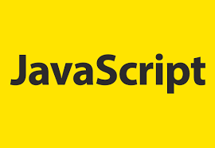

Javascript&jQuery

1일차 - 자바스크립트 소개와 활용예제
01자바스크립트 소개와 기초문법
02자바스크립트 만들 수 있는 콘텐츠 찾아보기_만들기
2일차 - 자바스크립트 문서출력방법, 변수, 연산자
01자바스크립트_문서출력하기
02자바스크립트_변수의 개념과 활용
03자바스크립트기초_연산자
3일차 -
01연산자 실습하기
02변수에 저장할 수 있는 데이터유형
03자바스크립트 기초_제어문
4일차 -
01자바스크립트_제어문02_switch_case
01자바스크립트_제어문03_while문_do while_for
01자바스크립트_제어문03_반복문을 활용한 탭콘텐츠 구현하기
제어문_응용하기_5장의 사진을 이용하여 탭콘텐츠 구현하기
5일차 -
자바스크립트 기초_함수의 개념과 활용
자바스크립트 실습_함수를 활용하여 비만도 지수구하기
6일차 -
자바스크립트기초_객체
자바스크립트기초_이벤트
7일차 -
자바스크립트 기초_객체(수학)
8일차 - 자바스크립트 내장객체 - 배열, 날짜, 브라우저, 문서
수업내용